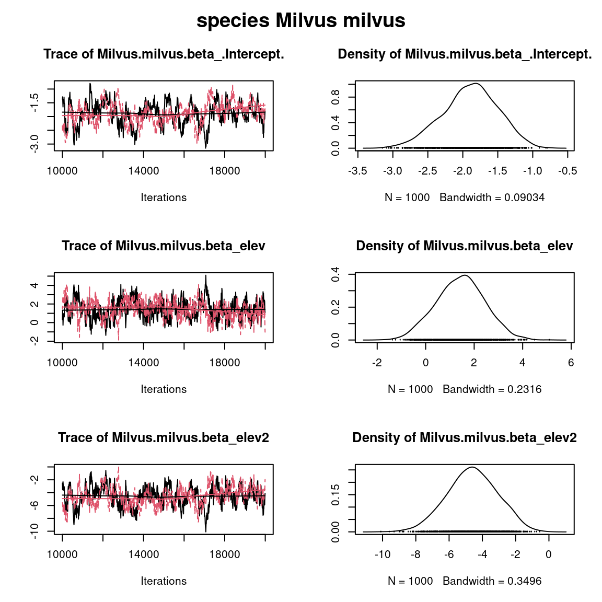
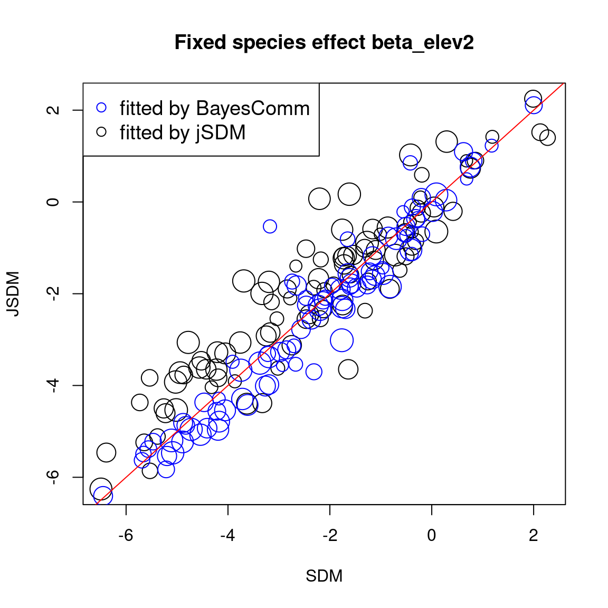
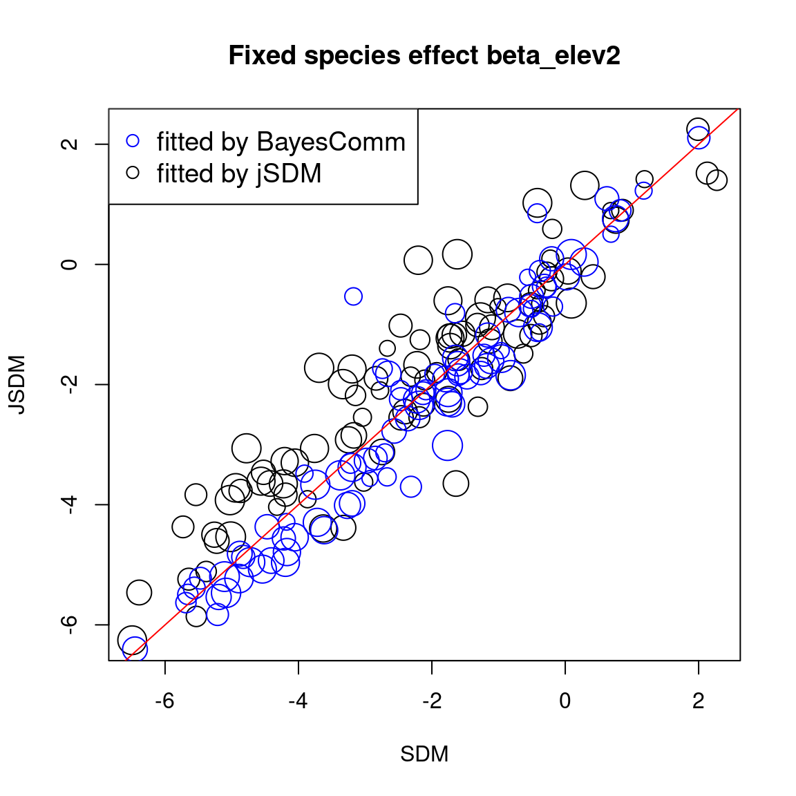

1 Dataset
1.1 Presence-absence of Swiss breeding birds

Figure 1.1: Swiss Breeding Birds Atlas (Kéry & Schmid 2006).
This data-set is available in the jSDM-package. It can be loaded with the data() command. The birds data-set is in “wide” format: each line is a site and the occurrence data are in columns.
The Swiss breeding bird survey (“Monitoring Häufige Brutvögel” MHB) has monitored the populations of 158 common species since 1999. The MHB sample consists of 267 1-km squares that are laid out as a grid across Switzerland. Fieldwork is conducted by about 200 skilled birdwatchers, most of them volunteers. Avian populations are monitored using a simplified territory mapping protocol, where each square is surveyed up to three times during the breeding season (only twice above the tree line). Surveys are conducted along a transect that does not change over the years.
The data-set contains the 2014 data, except for one quadrat not surveyed in 2014. It lists 158 bird species named in Latin and whose occurrences are expressed as the number of visits during which the species was observed on each site , with the exception of 13 species not surveyed in 2014 :
library("jSDM")
#> ##
#> ## jSDM R package
#> ## For joint species distribution models
#> ## https://ecology.ghislainv.fr/jSDM
#> ##
# Import center and reduce birds dataset
data(birds, package="jSDM")
# data.obs
PA_Birds <- birds[,1:158]We transform abundance into presence-absence data and remove species with less than 10 presences to facilitate MCMC convergence. We also look at the number of observations per site.
# Transform abundance into presence-absence
PA_Birds[PA_Birds>0] <- 1
# Remove species with less than 10 presences
rare_sp <- which(apply(PA_Birds, 2, sum) < 10)
PA_Birds <- PA_Birds[, -rare_sp]
# Number of sites and species
nsite <- dim(PA_Birds)[1]
nsite
#> [1] 266
nsp <- dim(PA_Birds)[2]
nsp
#> [1] 93
# Number of observations per site
nobs_site <- apply(PA_Birds, 1, sum)
nobs_site
#> 1 2 3 4 5 6 7 8 9 10 11 12 13 14 15 16 17 18 19 20
#> 30 32 49 38 44 37 34 35 41 35 40 42 24 41 44 37 42 45 38 42
#> 21 22 23 24 25 26 27 28 29 31 32 33 34 35 36 37 38 39 40 41
#> 39 38 44 37 34 42 45 37 40 43 47 34 38 35 34 45 30 27 37 45
#> 42 43 44 45 46 47 48 49 50 51 52 53 54 55 56 57 58 59 60 61
#> 41 35 34 35 14 37 38 15 42 8 43 31 42 38 33 45 43 42 44 32
#> 62 63 64 65 66 67 68 69 70 71 72 73 74 75 76 77 78 79 80 81
#> 36 25 37 42 33 34 44 30 38 42 36 41 7 8 27 37 38 40 47 22
#> 82 83 84 85 86 87 88 89 90 91 92 93 94 95 96 97 98 99 100 101
#> 24 38 17 6 11 38 46 34 43 30 32 39 36 40 39 47 39 31 18 40
#> 102 103 104 105 106 107 108 109 110 111 112 113 114 115 116 117 118 119 120 121
#> 45 44 41 38 41 41 27 44 44 32 33 6 6 47 36 45 25 17 30 32
#> 122 123 124 125 126 127 128 129 130 131 132 133 134 135 136 137 138 139 140 141
#> 34 13 43 47 37 41 27 39 48 32 37 48 37 33 31 31 42 44 44 44
#> 142 143 144 145 146 147 148 149 150 151 152 153 154 155 156 157 158 159 160 161
#> 10 32 27 24 41 42 25 32 15 41 10 26 43 35 27 9 33 32 28 44
#> 162 163 164 165 166 167 168 169 170 171 172 173 174 175 176 177 178 179 180 181
#> 48 37 26 35 31 35 39 14 42 40 35 29 30 7 33 34 29 30 33 24
#> 182 183 184 185 186 187 188 189 190 191 192 193 194 195 196 197 198 199 200 201
#> 28 29 48 16 21 7 36 34 20 35 8 33 44 42 33 26 24 30 32 31
#> 202 203 204 205 206 207 208 209 210 211 212 213 214 215 216 217 218 219 220 221
#> 33 37 26 14 24 39 33 40 36 41 38 39 30 31 50 46 40 36 33 19
#> 222 223 224 225 226 227 228 229 230 231 232 233 234 235 236 237 238 239 240 241
#> 54 35 17 36 40 30 47 46 41 42 44 28 40 19 38 40 28 35 31 17
#> 242 243 244 245 246 247 248 249 250 251 252 253 254 255 256 257 258 259 260 261
#> 35 41 19 32 37 38 45 9 39 15 14 34 38 18 17 10 28 12 10 26
#> 262 263 264 265 266 267
#> 30 30 32 12 45 50
# Number of observations per species
nobs_sp <- apply(PA_Birds, 2, sum)
nobs_sp
#> Anas platyrhynchos Milvus milvus
#> 55 95
#> Milvus migrans Accipiter gentilis
#> 87 11
#> Accipiter nisus Buteo buteo
#> 26 152
#> Falco tinnunculus Tetrao tetrix
#> 122 49
#> Lagopus muta Bonasa bonasia
#> 27 13
#> Alectoris graeca Fulica atra
#> 10 14
#> Columba livia domestica Columba oenas
#> 16 20
#> Columba palumbus Streptopelia decaocto
#> 170 30
#> Cuculus canorus Strix aluco
#> 133 19
#> Apus apus Jynx torquilla
#> 55 13
#> Picus viridis Dryocopus martius
#> 114 109
#> Dendrocopos major Alauda arvensis
#> 183 48
#> Hirundo rustica Ptyonoprogne rupestris
#> 97 32
#> Delichon urbicum Oriolus oriolus
#> 52 15
#> Corvus corax Corvus corone
#> 89 180
#> Pica pica Nucifraga caryocatactes
#> 93 67
#> Garrulus glandarius Pyrrhocorax graculus
#> 176 42
#> Parus major Parus caeruleus
#> 198 163
#> Parus ater Parus cristatus
#> 199 151
#> Parus palustris Parus montanus
#> 123 102
#> Aegithalos caudatus Sitta europaea
#> 70 170
#> Certhia familiaris Certhia brachydactyla
#> 156 88
#> Cinclus cinclus Troglodytes troglodytes
#> 32 234
#> Erithacus rubecula Phoenicurus ochruros
#> 219 244
#> Phoenicurus phoenicurus Saxicola rubetra
#> 61 27
#> Oenanthe oenanthe Monticola saxatilis
#> 52 11
#> Turdus torquatus Turdus merula
#> 85 223
#> Turdus pilaris Turdus philomelos
#> 88 210
#> Turdus viscivorus Acrocephalus palustris
#> 190 11
#> Sylvia atricapilla Sylvia borin
#> 217 101
#> Sylvia curruca Phylloscopus trochilus
#> 64 15
#> Phylloscopus collybita Phylloscopus bonelli
#> 213 67
#> Phylloscopus sibilatrix Regulus regulus
#> 35 173
#> Regulus ignicapilla Muscicapa striata
#> 174 107
#> Ficedula hypoleuca Prunella modularis
#> 51 174
#> Prunella collaris Anthus trivialis
#> 36 95
#> Anthus spinoletta Motacilla alba
#> 78 185
#> Motacilla cinerea Lanius collurio
#> 77 48
#> Sturnus vulgaris Passer domesticus
#> 108 109
#> Passer montanus Montifringilla nivalis
#> 81 24
#> Coccothraustes coccothraustes Carduelis chloris
#> 41 122
#> Carduelis carduelis Carduelis spinus
#> 116 35
#> Carduelis cannabina Carduelis cabaret
#> 83 49
#> Serinus citrinella Serinus serinus
#> 35 75
#> Pyrrhula pyrrhula Loxia curvirostra
#> 112 74
#> Fringilla coelebs Emberiza citrinella
#> 243 95
#> Emberiza cia
#> 311.2 Environmental variables
The environmental variables are:
- elev: the mean elevation of the quadrat (m).
- forest: the percentage of forest cover in the quadrat.
- rlength: the length of the route walked in the quadrat (km).
As a first approach, we just select the “elev” variable considering a quadratic orthogonal polynomial.
# Normalized continuous variables
Env_Birds <- data.frame(elev=scale(birds[,"elev"]),elev2=scale(birds[,"elev"]^2))
# Number of environmental variables plus intercept
np <- ncol(Env_Birds) + 1
np
#> [1] 32 Fitting species distribution models (SDM)
2.1 Definition of model
We consider a simple generalized linear multivariate model (GLMM) to estimate the occurrence probabilities on sites for each species such as :
\[y_{ij} \sim \mathcal{B}ernoulli(\theta_{ij})\]
\[ \mathrm{g}(\theta_{ij}) = X_i\beta_j \]
- \(\mathrm{g}(\cdot)\): Link function (probit or logit).
- \(X_i\): Vector of explanatory variables for site \(i\) (including intercept).
- \(\beta_j\): Effects of the explanatory variables on the probability of presence of species \(j\).
We consider below binomial models with a probit link. We want to compare the parameters of the SDMs fitted using BayesComm and jSDM packages.
2.2 Using BayesComm
In a first step, we use the package BayesComm described in the article (Golding, Nunn & Purse 2015) to fit binomial models with a probit link function.
The package BayesComm fits Bayesian multivariate binary (probit) regression models for analysis of ecological communities. These models can be used to make inference about underlying inter-species interactions in communities and to separate the effects of environmental covariates and inter-species interactions on community assembly.
2.2.1 Parameters inference
We estimate the parameters of the species distribution model (SDM) with the function BC() and the argument model="environment".
library(BayesComm)
T1 <- Sys.time()
mod_BC <- BayesComm::BC(Y=as.matrix(PA_Birds), X=as.matrix(Env_Birds), model="environment", its=20000, thin=10, burn=10000)
# Estimates
beta_est_BC <- data.frame(sp=names(PA_Birds), intercept=NA, elev=NA, elev2=NA)
for (j in 1:nsp) {
beta_est_BC[j, 2:(np+1)] <- as.numeric(summary(mod_BC, chain=paste0("B$", names(PA_Birds)[j]))$statistics[, "Mean"])
}
#Z_BC <- apply(mod_BC$trace$z,c(2,3), mean)
T2 <- Sys.time()
T_BC <- difftime(T2,T1)
# Deviance BayesComm
X1 <- cbind(rep(1,nsite), as.matrix(Env_Birds))
probit_theta_latent_BC <- X1 %*% t(as.matrix(beta_est_BC[,2:4]))
# Deviance
logL=0
for (i in 1:nsite){
for (j in 1:nsp){
theta <- pnorm(probit_theta_latent_BC[i,j])
logL = logL + dbinom(PA_Birds[i,j],1,theta,1)
}
}
deviance_BC <- -2*logL
save(mod_BC, file="SDM_JSDM_cache/BC.rda")
save(beta_est_BC, T_BC, deviance_BC,
probit_theta_latent_BC,
file="SDM_JSDM_files/BC.rda")2.2.2 Evaluation of MCMC convergence
2.2.2.1 Representation of results
We visually evaluate the convergence of MCMCs by representing the trace and density a posteriori of the estimated parameters.
library(BayesComm)
load("SDM_JSDM_cache/BC.rda")
par(mfrow=c(1,1), oma=c(0,0,2,0))
plot(mod_BC, chain=paste0("B$",names(PA_Birds)[2]))
title(main=paste0("species ", names(PA_Birds)[2]), outer=TRUE)Overall, the traces and the densities of the parameters indicate the convergence of the algorithm. Indeed, we observe on the traces that the values oscillate around averages without showing an upward or downward trend and we see that the densities are quite smooth and for the most part of Gaussian form.
2.3 Using jSDM
In a second step, we use the package jSDM to fit binomial models with a probit link.
2.3.1 Parameters inference
We estimate the parameters of the SDM with the function jSDM_binomial_probit() and the argument n_latent=0 set by default.
## Load libraries
require(doParallel)
require(foreach)
## Make a cluster for parallel MCMCs
nchains <- 2
ncores <- nchains ## One core for each MCMC chains
clust <- makeCluster(ncores)
registerDoParallel(clust)
# Starting values for two chains
beta_start <- c(-1,1)
#formatting of starting parameters generated by the function
# Seeds
seed_mcmc <- c(1234, 4321)
library(jSDM)
# Model with foreach and doPar call
mod_probit <-
foreach (i = 1:nchains) %dopar% {
# Infering model parameters
T1 <- Sys.time()
mod <- jSDM::jSDM_binomial_probit(
# Iterations
mcmc = 10000,
thin = 10,
burnin = 10000,
# Data
presence_data = PA_Birds,
site_data = Env_Birds,
site_formula=~.,
# Priors
V_beta =10,
mu_beta = 0,
# Starting values
beta_start = beta_start[i],
# Other
seed = seed_mcmc[i],
verbose = 0
)
T2 <- Sys.time()
mod$T_jSDM <- difftime(T2,T1)
return(mod)
}
# Stop cluster
#stopCluster(clust)2.3.2 Evaluation of MCMC convergence
2.3.2.1 The Gelman–Rubin convergence diagnostic
Definition:
The Gelman–Rubin diagnostic evaluates MCMC convergence by analyzing the difference between multiple Markov chains. The convergence is assessed by comparing the estimated between-chains and within-chain variances for each model parameter. Large differences between these variances indicate non-convergence. See Gelman & Rubin (1992) and Brooks & Gelman (1998) for the detailed description of the method.
Suppose we have \(M\) chains, each of length \(N\), although the chains may be of different lengths. The same-length assumption simplifies the formulas and is used for convenience. For a model parameter \(\theta\), let \(\left(\theta_{ùëöt}\right)_{t=1}^N\) be the \(ùëö\)th simulated chain, \(ùëö=1,\dots,ùëÄ\). Let \(\hat{\theta}_ùëö=\frac{1}{N}\sum\limits_{t=1}^N \hat{\theta}_{mt}\) and \(\hat{\sigma}^2_ùëö=\frac{1}{N-1}\sum\limits_{t=1}^N (\hat{\theta}_{mt}-\hat{\theta}_ùëö)^2\) be the sample posterior mean and variance of the \(ùëö\)th chain, and let the overall sample posterior mean be \(\hat{\theta}=\frac{1}{ùëÄ}\sum\limits_{m=1}^ùëÄ \hat{\theta}_m\).
The between-chains and within-chain variances are given by \[B=\frac{N}{M-1}\sum\limits_{m=1}^ùëÄ (\hat{\theta}_m - \hat{\theta})^2\] \[W=\frac{1}{M}\sum\limits_{m=1}^ùëÄ\hat{\sigma}^2_m\]
Under certain stationarity conditions, the pooled variance :
\[\hat{V}=\frac{N-1}{N}W + \frac{M+1}{MN}B\]
is an unbiased estimator of the marginal posterior variance of \(\theta\) (Gelman & Rubin (1992)). The potential scale reduction factor (PSRF) is defined to be the ratio of \(\hat{ùëâ}\) and \(ùëä\). If the \(ùëÄ\) chains have converged to the target posterior distribution, then PSRF should be close to 1. The article Brooks & Gelman (1998) corrected the original PSRF by accounting for sampling variability as follows: \[ \hat{R}= \sqrt{\frac{\hat{d}+3}{\hat{d}+1}\frac{\hat{V}}{W}}\]
where \(\hat{d}\) is the degrees of freedom estimate of a \(ùë°\) distribution.
PSRF estimates the potential decrease in the between-chains variability \(ùêµ\) with respect to the within-chain variability \(ùëä\). If \(\hat{R}\) is large, then longer simulation sequences are expected to either decrease \(ùêµ\) or increase \(ùëä\) because the simulations have not yet explored the full posterior distribution. As the article Brooks & Gelman (1998) have suggested, if \(\hat{R} < 1.2\) for all model parameters, one can be fairly confident that convergence has been reached. Otherwise, longer chains or other means for improving the convergence may be needed. Even more reassuring is to apply the more stringent condition \(\hat{R} < 1.1\).
Compute \(\hat{R}\):
We evaluate the convergence of the MCMC output in which two parallel chains are run (with starting values that are over dispersed relative to the posterior distribution). Convergence is diagnosed when the four chains have ‘forgotten’ their initial values, and the output from all chains is indistinguishable. If the convergence diagnostic gives values of potential scale reduction factor (PSRF) or \(\hat{R}\) substantially above 1, its indicates lack of convergence.
burnin <- mod_probit[[1]]$model_spec$burnin
ngibbs <- burnin + mod_probit[[1]]$model_spec$mcmc
thin <- mod_probit[[1]]$model_spec$thin
require(coda)
arr2mcmc <- function(x) {
return(mcmc(as.data.frame(x),
start=burnin+1 , end=ngibbs, thin=thin))
}
# MCMC lists
mcmc_list_param <- mcmc.list(lapply(lapply(mod_probit,"[[","mcmc.sp"), arr2mcmc))
mcmc_list_beta0 <- mcmc.list(lapply(mcmc_list_param[,grep("Intercept",
colnames(mcmc_list_param[[1]]),
value=TRUE)], arr2mcmc))
# psrf gelman indice
psrf_beta <- mean(gelman.diag(mcmc_list_param[, grep("Intercept",
colnames(mcmc_list_param[[1]]),
invert=TRUE)],
multivariate=FALSE)$psrf[,2])
psrf_beta0 <- mean(gelman.diag(mcmc_list_beta0, multivariate=FALSE)$psrf[,2])
Rhat <- data.frame(Rhat=c(psrf_beta, psrf_beta0),
Variable=c("beta", "beta0"))
# Barplot
library(ggplot2)
ggplot(Rhat, aes(x=Variable, y=Rhat)) +
ggtitle("Averages of Rhat obtained for species effect") +
theme(plot.title = element_text(hjust = 0.5, size=14)) +
geom_bar(fill="skyblue", stat = "identity", width=0.5) +
geom_text(aes(label=round(Rhat,3)), vjust=0, hjust=-0.1) +
geom_hline(yintercept=1, color='red') +
ylim(0, max(Rhat$Rhat)+0.2) +
theme(axis.title.y = element_text(size=12),
axis.title.x = element_text(size=12)) +
theme(axis.text.y = element_text(size=11),
axis.text.x = element_text(size=11)) +
theme() +
coord_flip() 
We can see that the \(\hat{R}\) are very close to 1 for the species effects \(\beta\) and the species intercept \(\beta_0\). We can therefore be fairly confident that convergence has been achieved for these parameters.
2.3.2.2 Representation of results
Overview of the results :
# Output
n_chains <- length(mod_probit)
mod_jSDM <- mod_probit[[1]]
str_jSDM <- paste(capture.output(str(mod_jSDM, max.level = 1)), collapse="\n")
# Fitted values
beta_jSDM <- lapply(mod_jSDM$mcmc.sp, colMeans)
#Z_latent_jSDM <- mod_jSDM$Z_latent
probit_theta_jSDM <- mod_jSDM$probit_theta_latent
deviance_jSDM <- mean(mod_jSDM$mcmc.Deviance)
T_jSDM <- mod_jSDM$T_jSDM
save(T_jSDM, n_chains, str_jSDM, beta_jSDM, probit_theta_jSDM, deviance_jSDM,
file="SDM_JSDM_files/jSDM.rda")#> number of chains : 2
#> content of each chain : List of 7
#> $ mcmc.Deviance : 'mcmc' num [1:1000, 1] 17762 17805 17823 17782 17812 ...
#> ..- attr(*, "mcpar")= num [1:3] 10001 19991 10
#> ..- attr(*, "dimnames")=List of 2
#> $ mcmc.sp :List of 93
#> $ Z_latent : num [1:266, 1:93] -0.745 -0.732 0.458 -1.388 -1.741 ...
#> ..- attr(*, "dimnames")=List of 2
#> $ probit_theta_latent: num [1:266, 1:93] 0.175 0.175 -1.374 -1.173 -1.552 ...
#> ..- attr(*, "dimnames")=List of 2
#> $ theta_latent : num [1:266, 1:93] 0.5689 0.5689 0.0877 0.1231 0.0634 ...
#> ..- attr(*, "dimnames")=List of 2
#> $ model_spec :List of 15
#> $ T_jSDM : 'difftime' num 54.7729182243347
#> ..- attr(*, "units")= chr "secs"
#> - attr(*, "class")= chr "jSDM"We can also visually evaluate the convergence of MCMCs by representing the trace and density a posteriori of the estimated parameters.
par(mfrow=c(1,1), oma=c(0,0,2,0))
plot(mcmc_list_param[,grep("Milvus.milvus.beta",colnames(mcmc_list_param[[1]]))])
title(main=paste0("species ", names(PA_Birds)[2]), outer=TRUE)
Overall, the traces and the densities of the parameters indicate the convergence of the algorithm. Indeed, we observe on the traces that the values oscillate around averages without showing an upward or downward trend and we see that the densities are quite smooth and for the most part of Gaussian form.
3 Fitting joint species distribution models (JSDM)
We consider a latent variable model (LVM) to account for species co-occurrence on all sites (Warton et al. 2015) in the jSDM package, such as :
\[y_{ij} \sim \mathcal{B}ernoulli(\theta_{ij})\]
\[ \mathrm{g}(\theta_{ij}) = X_i\beta_j + W_i\lambda_j \]
- \(\mathrm{g}(\cdot)\): Link function (probit or logit).
- \(X_i\): Vector of explanatory variables for site \(i\) (including intercept).
- \(\beta_j\): Effects of the explanatory variables on the probability of presence of species \(j\).
- \(W_i\): Vector of random latent variables for site \(i\). \(W_i \sim N(0, 1)\). The number of latent variables must be fixed by the user (default to 2).
- \(\lambda_j\): Effects of the latent variables on the probability of presence of species \(j\). Also known as “factor loadings” (Warton et al. 2015).
This model is equivalent to the generalized linear multivariate model (GLMM) \(\mathrm{g}(\theta_{ij}) =\alpha_i + X_i.\beta_j + u_{ij}\), where \(u_{ij} \sim \mathcal{N}(0, \Sigma)\) considered in the BayesComm package, with the constraint that the variance-covariance matrix \(\Sigma = \Lambda \Lambda^{\prime}\), where \(\Lambda\) is the full matrix of factor loadings, with the \(\lambda_j\) as its columns.
We consider below binomial models with a probit link.
3.1 Using BayesComm
3.1.1 Parameters inference
We estimate the parameters of the JSDM with the function BC() and the argument model="full" (intercept, covariates and community matrix).
T1 <- Sys.time()
mod_BC_comm <- BayesComm::BC(Y=as.matrix(PA_Birds), X=as.matrix(Env_Birds),
model="full", its=20000, thin=10, burn=10000)
# Estimates
beta_est_BC_comm <- data.frame(sp=names(PA_Birds), intercept=NA, elev=NA, elev2=NA)
for (j in 1:nsp) {
beta_est_BC_comm[j, 2:(np+1)] <- as.numeric(summary(mod_BC_comm,
chain=paste0("B$",
names(PA_Birds)[j]))$statistics[, "Mean"])
}
#Z_BayesComm_com <- apply(mod_BC_comm$trace$z,c(2,3), mean)
T2 <- Sys.time()
T_BC_comm <- difftime(T2,T1)
# Deviance BayesComm
X1 <- cbind(rep(1,nsite), as.matrix(Env_Birds))
e <- residuals(mod_BC_comm)
probit_theta_latent_BC_comm <- X1 %*% t(as.matrix(beta_est_BC_comm[,2:4])) + e
# Deviance
logL=0
for (i in 1:nsite){
for (j in 1:nsp){
theta <- pnorm(probit_theta_latent_BC_comm[i,j])
logL = logL + dbinom(PA_Birds[i,j],1,theta,1)
}
}
deviance_BC_comm <- -2*logL
# Correlation matrix
R <- apply(mod_BC_comm$trace$R,2,mean)
R_mat <- matrix(1,nsp,nsp)
species <- colnames(PA_Birds)
colnames(R_mat) <- rownames(R_mat) <- species
for(j in 1:nsp){
for(jprim in 1:nsp){
if(length(grep(paste0(species[j],"_",species[jprim]), names(R)))!=0){
R_mat[j,jprim] <- R_mat[jprim,j] <- R[grep(paste0(species[j],"_",species[jprim]), names(R)) ]
}
}
}
save(mod_BC_comm, file="SDM_JSDM_cache/BC_comm.rda")
save(beta_est_BC_comm, T_BC_comm, R_mat,
deviance_BC_comm, probit_theta_latent_BC_comm,
file="SDM_JSDM_files/BC_comm.rda")3.1.2 Evaluation of MCMC convergence
3.1.2.1 Representation of results
We visually evaluate the convergence of MCMCs by representing the trace and density a posteriori of the estimated parameters.
load("SDM_JSDM_cache/BC_comm.rda")
par(mfrow=c(1,1), oma=c(0,0,2,0))
plot(mod_BC_comm, chain=paste0("B$", names(PA_Birds)[2]))
title(main=paste0("species ", names(PA_Birds)[2]), outer=TRUE)
Overall, the traces and the densities of the parameters indicate the convergence of the algorithm. Indeed, we observe on the traces that the values oscillate around averages without showing an upward or downward trend and we see that the densities are quite smooth and for the most part of Gaussian form.
3.2 Using jSDM
3.2.1 Parameters inference
We estimate the latent variables model parameters with the function jSDM_binomial_probit() and the argument n_latent=2.
library(parallel)
library(doParallel)
## Make a cluster for parallel MCMCs
nchains <- 2
ncores <- nchains ## One core for each MCMC chains
clust <- makeCluster(ncores)
registerDoParallel(clust)
# Starting parameters
n_latent <- 2
beta_start <- c(1, -1)
lambda_start <- c(-1, 1)
W_start <- list(matrix(rnorm(n_latent*nsite), nsite),
matrix(rnorm(n_latent*nsite), nsite))
#formatting of starting parameters
#and constraints on lambda generated by the function
# Seeds
seed_mcmc <- c(1234, 4321)
# Model
mod_probit_lv <-
foreach (i = 1:nchains) %dopar% {
# Infering model parameters
T1 <- Sys.time()
mod <- jSDM::jSDM_binomial_probit(
# Iterations
burnin=10000, mcmc=10000, thin=10,
# Data
presence_data=PA_Birds,
site_data = Env_Birds,
site_formula = ~.,
# Model specification
n_latent=2,
site_effect="none",
# Priors
V_beta =10,
mu_beta = 0,
mu_lambda = 0,
V_lambda= 10,
# Starting values
beta_start = beta_start[[i]],
lambda_start = lambda_start[[i]],
W_start = W_start[[i]],
# Other
seed = seed_mcmc[i],
verbose = 0
)
T2 <- Sys.time()
mod$T_jSDM <- difftime(T2,T1)
return(mod)
}
# Stop cluster
#stopCluster(clust)3.2.2 Evaluation of MCMC convergence
3.2.2.1 The Gelman–Rubin convergence diagnostic
Compute \(\hat{R}\):
We evaluate the convergence of the MCMC output in which two parallel chains are run (with starting values that are over dispersed relative to the posterior distribution). Convergence is diagnosed when the four chains have ‘forgotten’ their initial values, and the output from all chains is indistinguishable. If the convergence diagnostic gives values of potential scale reduction factor (PSRF) or \(\hat{R}\) substantially above 1, its indicates lack of convergence.
burnin <- mod_probit_lv[[1]]$model_spec$burnin
ngibbs <- burnin + mod_probit_lv[[1]]$model_spec$mcmc
thin <- mod_probit_lv[[1]]$model_spec$thin
require(coda)
arr2mcmc <- function(x) {
return(mcmc(as.data.frame(x),
start=burnin+1 , end=ngibbs, thin=thin))
}
# MCMC lists
mcmc_list_param <- mcmc.list(lapply(lapply(mod_probit_lv,"[[","mcmc.sp"), arr2mcmc))
mcmc_list_lambda <- mcmc.list(lapply(mcmc_list_param[, grep("lambda",
varnames(mcmc_list_param),
value=TRUE)], arr2mcmc))
mcmc_list_lv <- mcmc.list(lapply(lapply(mod_probit_lv,
"[[","mcmc.latent"), arr2mcmc))
mcmc_list_beta <- mcmc.list(lapply(mcmc_list_param[, grep("beta",
varnames(mcmc_list_param),
value=TRUE)], arr2mcmc))
mcmc_list_beta0 <- mcmc.list(mcmc_list_beta[, grep("Intercept",
varnames(mcmc_list_beta),
value=TRUE)])
# psrf gelman indice
psrf_beta <- mean(gelman.diag(mcmc_list_beta[, grep("Intercept",
varnames(mcmc_list_beta),
invert=TRUE)],
multivariate=FALSE)$psrf[,2])
psrf_beta0 <- mean(gelman.diag(mcmc_list_beta0, multivariate=FALSE)$psrf[,2])
psrf_lambda <- mean(gelman.diag(mcmc_list_lambda,
multivariate=FALSE)$psrf[,2], na.rm=TRUE)
psrf_lv <- mean(gelman.diag(mcmc_list_lv,
multivariate=FALSE)$psrf[,2 ])
Rhat <- data.frame(Rhat=c(psrf_beta0, psrf_beta, psrf_lambda, psrf_lv),
Variable=c("beta0", "beta", "lambda", "W"))
# Barplot
library(ggplot2)
ggplot(Rhat, aes(x=Variable, y=Rhat)) +
ggtitle("Averages of Rhat obtained for each type of parameter") +
theme(plot.title = element_text(hjust = 0.5, size=12)) +
geom_bar(fill="skyblue", stat = "identity") +
geom_text(aes(label=round(Rhat,3)), vjust=0, hjust=-0.1) +
geom_hline(yintercept=1, color='red') +
ylim(0, max(Rhat$Rhat)+0.2) +
theme(plot.margin = margin(t = 0.1, r = 0.2, b = 0.1, l = 0.2,"cm")) +
coord_flip() 
We can see that the \(\hat{R}\) are very close to 1 for the species effects \(\beta\) and the species intercept \(\beta_0\). We can therefore be fairly confident that convergence has been achieved for these parameters.
The \(\hat{R}\) obtained for the latent variables \(W\) and the factor loadings \(\lambda\) are also pretty close to 1, indicating that convergence has been reached for these parameters.
3.2.2.2 Representation of results
Overview of the results :
# Output
n_chains <- length(mod_probit_lv)
mod_jSDM_lv <- mod_probit_lv[[1]]
str_jSDM_lv <- paste(capture.output(str(mod_jSDM_lv, max.level = 1)), collapse="\n")
# Fitted values
param_jSDM_lv <- lapply(mod_jSDM_lv$mcmc.sp, colMeans)
#Z_latent_jSDM_lv <- mod_jSDM_lv$Z_latent
probit_theta_jSDM_lv <- mod_jSDM_lv$probit_theta_latent
deviance_jSDM_lv <- mean(mod_jSDM_lv$mcmc.Deviance)
T_jSDM_lv <- mod_jSDM_lv$T_jSDM
residual_corr_mat <- get_residual_cor(mod_jSDM_lv)$cor.mean
save(T_jSDM_lv, n_chains, str_jSDM_lv, param_jSDM_lv, probit_theta_jSDM_lv, deviance_jSDM_lv, residual_corr_mat,
file="SDM_JSDM_files/jSDM_lv.rda")
load("SDM_JSDM_files/jSDM_lv.rda")
cat("number of chains :", n_chains,"\n")
#> number of chains : 2
cat("content of each chain :", str_jSDM_lv,"\n")
#> content of each chain : List of 8
#> $ mcmc.Deviance : 'mcmc' num [1:1000, 1] 14762 14827 14802 14851 14806 ...
#> ..- attr(*, "mcpar")= num [1:3] 10001 19991 10
#> ..- attr(*, "dimnames")=List of 2
#> $ mcmc.sp :List of 93
#> $ mcmc.latent :List of 2
#> $ Z_latent : num [1:266, 1:93] -0.694 -0.796 0.494 -1.343 -1.54 ...
#> ..- attr(*, "dimnames")=List of 2
#> $ probit_theta_latent: num [1:266, 1:93] 0.2704 0.0943 -1.2707 -1.041 -1.3303 ...
#> ..- attr(*, "dimnames")=List of 2
#> $ theta_latent : num [1:266, 1:93] 0.6037 0.537 0.1081 0.1551 0.0978 ...
#> ..- attr(*, "dimnames")=List of 2
#> $ model_spec :List of 20
#> $ T_jSDM : 'difftime' num 1.87375484307607
#> ..- attr(*, "units")= chr "mins"
#> - attr(*, "class")= chr "jSDM"We visually evaluate the convergence of MCMCs by representing the trace and density a posteriori of the estimated parameters.
par(mfrow=c(1,1), oma=c(0,0,2,0))
plot(mcmc_list_param[,grep("Milvus.milvus.beta",colnames(mcmc_list_param[[1]]))])
title(main=paste0("species ", names(PA_Birds)[2]), outer=TRUE)
Overall, the traces and the densities of the parameters indicate the convergence of the algorithm. Indeed, we observe on the traces that the values oscillate around averages without showing an upward or downward trend and we see that the densities are quite smooth and for the most part of Gaussian form. # Comparison of results
We want to compare the deviance, computation time and parameters of the SDM and the JSDM fitted using jSDM or BayesComm packages for fitting.
3.3 Deviance and compilation time
| package | model | Time | Deviance |
|---|---|---|---|
| BayesComm | SDM | 228.3 secs | 17555 |
| jSDM | SDM | 54.8 secs | 17809 |
| BayesComm | JSDM (GLMM) | 329.4 secs | 13448 |
| jSDM | JSDM (LVM) | 112.4 secs | 14770 |
3.4 Parameter values
The sizes of the dots on the following graphs are proportional to the number of observations per species. Parameters related to abundant species are represented by larger dots than those associated with rare species.
First, we compare the intercept for each species between classical or joint species distribution model that takes into account co-occurrences between species, fitted using BayesComm or jSDM.
# Intercepts
## jSDM
plot(lapply(beta_jSDM,"[", 1) , lapply(param_jSDM_lv, "[", 1), cex=nobs_sp^(1/5),
main="Fixed species intercept beta",
xlab="SDM", ylab="JSDM")
# BayesComm
points(beta_est_BC$intercept, beta_est_BC_comm$intercept,
cex=rep(nobs_sp^(1/5),75), col='blue')
abline(a=0, b=1, col="red")
legend("topleft",c("fitted by BayesComm","fitted by jSDM"), pch=1, cex=1.2, col=c('blue','black'))
abline(a=0, b=1, col="red")
We compare the effect of the environmental variables for each species between the four models.
# Environmental variable effects
for(k in 2:np){
## jSDM
plot(lapply(beta_jSDM, "[", k), lapply(param_jSDM_lv,"[", k), cex=nobs_sp^(1/5),
main=paste0("Fixed species effect ", names(beta_jSDM[[1]][k])),
xlab="SDM", ylab="JSDM")
## BayesComm
points(beta_est_BC[,k+1], beta_est_BC_comm[,k+1],
cex=rep(nobs_sp^(1/5),75), col='blue')
abline(a=0, b=1, col="red")
legend("topleft",c("fitted by BayesComm","fitted by jSDM"), pch=1, cex=1.2, col=c('blue','black'))
} 

3.5 Predictions
We compare the probit of occurrence probabilities predicted by the classical or joint species distribution, fitted using BayesComm or jSDM.
# Predictions
## jSDM
plot(probit_theta_jSDM, probit_theta_jSDM_lv,
cex=rep(nobs_sp^(1/5), 75),
main="Predicted probit(theta)",
xlab="SDM",
ylab="JSDM")
## BayesComm
points(probit_theta_latent_BC, probit_theta_latent_BC_comm,
cex=rep(nobs_sp^(1/5),75), col='blue')
abline(a=0, b=1, col="red")
legend("topleft",c("fitted by BayesComm","fitted by jSDM"), pch=1, cex=1.2, col=c('blue','black'))
In one hand, the results obtained with jSDM and BayesComm are quite similar and therefore the use of a latent variable model (LVM) rather than a classical GLMM has only a minimal influence on the estimated values of the species effects (\(\beta\)).
On the other hand, the estimated values of the species intercept are quite similar using a classical species distribution model (SDM) or a joint species distribution model (JSDM), but the estimated values of the other species effects differ slightly.
3.6 Residual correlaton matrix
After fitting the jSDM with latent variables, the full species residual correlation matrix \(R=(R_{ij})^{i=1,\ldots, nspecies}_{j=1,\ldots, nspecies}\) can be derived from the covariance in the latent variables such as : \[\Sigma_{ij} = \begin{cases} \lambda_i .\lambda_j^T & \text{ if } i \neq j \\ \lambda_i .\lambda_j^T + 1 & \text{ if } i=j \end{cases}\], then we compute correlations from covariances : \[R_{i,j} = \frac{\Sigma_{ij}}{\sqrt{\Sigma _{ii}\Sigma _{jj}}}\].
# Residual correlation matrix obtained with BayesComm
reorder.cor.mean <- corrplot::corrMatOrder(R_mat, order = "FPC", hclust.method = "average")
par(cex=1, cex.main=1.5)
corrplot::corrplot(R_mat[reorder.cor.mean,reorder.cor.mean], title = "Residual Correlation Matrix from BayesComm", diag = F, type = "lower", method = "color", mar = c(1,1,3,1), tl.srt = 40, tl.cex = 0.4)
# Residual correlation matrix obtained with jSDM
reorder.cor.mean <- corrplot::corrMatOrder(residual_corr_mat, order = "FPC", hclust.method = "average")
rownames(residual_corr_mat) <- colnames(residual_corr_mat) <- colnames(PA_Birds)
par(cex=1, cex.main=1.5)
corrplot::corrplot(residual_corr_mat[reorder.cor.mean,reorder.cor.mean], title = "Residual Correlation Matrix from jSDM", diag = F, type = "lower", method = "color", mar = c(1,1,3,1), tl.srt = 40, tl.cex = 0.4)

References
Brooks, S. & Gelman, A. (1998) General Methods for Monitoring Convergence of Iterative Simulations. J. Comput. Graphi. Stat., 7, 434–455.
Gelman, A. & Rubin, D.B. (1992) Inference from Iterative Simulation Using Multiple Sequences. Statistical Science, 7, 457–472.
Golding, N., Nunn, M.A. & Purse, B.V. (2015) Identifying biotic interactions which drive the spatial distribution of a mosquito community. Parasites & Vectors, 8, 367.
Kéry, M. & Schmid, H. (2006) Estimating species richness: Calibrating a large avian monitoring programme. Journal of Applied Ecology, 43, 101–110.
Warton, D.I., Blanchet, F.G., O’Hara, R.B., Ovaskainen, O., Taskinen, S., Walker, S.C. & Hui, F.K.C. (2015) So many variables: Joint modeling in community ecology. Trends in Ecology & Evolution, 30, 766–779.